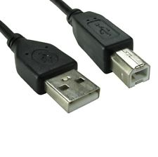

Installation & Mise en place
Présentation
Dans ce document, nous allons nous focaliser sur l'installation et la mise en place des différents composants de ce challenge. Nous avons tenté, lors de ce projet, de développer des dimensions variées de la sécurité informatique, tout en conservant une forme ludique. Les différentes étapes du challenge se déroulent donc dans des environnements matériels et logiciels que nous avons voulus variés et intéressants, tout en restant accessibles en terme de coût financier et de temps de développement.
L'objectif principal du challenge est de désamorcer une "bombe", incarnée par une carte arduino sur laquelle a été connecté un écran TFT LCD. Pour cela, les participants devront :
- Inverser une empreinte sha1 extraite d'un dump mémoire d'un téléphone Android, pour retrouver le motif de déverouillage du téléphone
- Exploiter une vulnérabilité web (faille dite include) pour obtenir un shell interactif sur le Raspberry Pi
- Comprendre le protocole de communication entre l'application Android, le Raspberry Pi et la carte Arduino, et forger un message pour stopper la bombe
Environnement Matériel
Nous avons utilisé, pour mener à bien ce projet, un certain nombre de composants matériels, listés ci-dessous.
Le jour de la présentation du Challenge, nous apporterons le matériel nécessaire à la mise en place de l'atelier, afin d'éviter un achat potentiel de matériel à l'organisation.
Raspberry Pi Modèle B (512Mb de RAM)
Il s'agit d'un mini ordinateur idéal pour le développement d'outils et de logiciels destinés au monde de l'embarqué. Dans le projet, il gère le point d'accès Wifi, le serveur Web, la communication entre le téléphone et la carte Arduino Uno.
Il dispose de ports GPIO (non utilisés), de deux ports USB, d'une sortie jack femelle, d'une sortie VGA femelle, d'un port ethernet femelle, d'un port HDMI femelle,un processeur ARM ainsi qu'un lecteur de cartes SD.
Arduino UNO (officielle)
Il s'agit d'une carte éléctronique programmable, particulièrement utile lors d'opérations de prototypage. Elle est composé d'un certain nombre de "Ports (ou pin) d'entrée" et de "Ports (pout) de sortie". Certains ports sont analogiques, d'autres seulement numériques.
Cette carte est programmable depuis un ordinateur, soit directement en assembleur, soit en utilisant un langage dédié, dont la syntaxe et la structure sont presque entièrements similaires au langage C (voire au langage C++).Dans notre cas, elle communique via un port série, connecté en USB au Raspberry Pi.

2.8" TFT Touch Shield (AdaFruit)
Il s'agit d'un "shield", soit un composant déjà monté sur un circuit électronique, qu'il suffit de connecter à la carte arduino Uno pour disposer d'un affichage couleur. L'écran est tactile (technologie résistive), mais nous nous sommes contenté d'exploiter la fonctionnalité d'affichage pour la mise en place du compteur décroissant. La résolution est de 240x320 avec des couleurs 18-bits ce qui correspond à 262 000 couleurs. Ce composant comporte ses propres librairies (notamment d'affichage et de gestion du tactile).
Sony XPERIA C5303
Il s'agit d'un smartphone android classique, milieu de gamme, fonctionnant sous Android 7.0 Nougat.Il dispose notamment d'une carte Wifi. Il comprend le fichier gesture.key, que nous avons utilisé pour retrouver le motif de déverouillage du téléphone, ainsi qu'une application Android, distribuée sous la forme d'un APK, que nous avons installé dans le téléphone.
Dongle WiFi NetGear
Il s'agit d'un dongle Wifi permettant de créer un réseau local sans fil rapidement. Il supporte correctement les normes 802.11 b/g/n, avec un débit maximal théorique de 300 Mbps.
Carte SD 16Gb
Nous avons utilisée une carte SD standard 16Gb pour stocker le système d'exploitation installé sur le Raspberry Pi et l'environnement logiciel correspondant. Cette carte est insérée sur le slot de carte SD du Raspberry Pi.
Finalement, nous avons également utilisé, pour interconnecter ces différents composants :

Cable microUSB mâle vers USB mâle
Pour alimenter la Raspberry Pi

Cable USB série mâle vers USB mâle
Pour connecter la Raspberry Pi et l'Arduino UNO
La configuration finale est la suivante, une fois l'environnement logiciel déployé sur chaque composant matériel :
- La carte Arduino est connectée via la liaison USB/série au Raspberry Pi (port USB #1)
- Le dongle Wifi est connecté au Raspberry Pi (port USB #2)
- La carte SD est insérée dans le slot prévu à cet effet sur le Raspberry Pi
- Le Raspberry Pi est alimenté via le port micro USB au secteur
- Le téléphone Android est allumé, connecté au réseau sans fil de la Raspberry Pi, et verouillé
Pour mener à bien le challenge, il est nécessaire de disposer d'au moins un ordinateur disposant d'une connection Wifi, de préférence équipé d'une distribution GNU/Linux standard. Nous pouvons apporter un ordinateur portable correspondant à ces critères.
Environnement logiciel
Dans cette partie, nous allons détailler l'installation des différents composants logiciels nécessaires au fonctionnement du Challenge. Dans la mesure du possible, nous avons tenté d'utiliser des solutions Open Source efficaces et compatibles avec notre matériel.
Structure du dépôt
Le dépôt que nous proposons est composé des éléments suivants :
- 01-AndroidGestureForensic : contient les fichiers nécessaires à l'étape Android Forensic
- bruteforce.py: script assistant (fourni aux utilisateurs) pour la résolution du challenge
- exploit.py: script solution
- gesture.key: fichier contenant le sha1 du motif à retrouver
- README.md: fichier d'aide
- 02-AndroidApp: contient les fichiers nécessaires au déploiement de l'application Android
- activity_main.xml : fichier décrivant l'interface graphique
- AndroidManifest.xml: manifeste du projet android
- app-release-unsigned.apk: fichier d'installation de l'application
- MainActivity.java: code source du projet
- README.md: fichier d'aide
- 03-WebService: contient les fichiers accessibles via le serveur web
- action.php: actionneur PHP déclenché par l'application Android
- read.php: fichier PHP utilisé pour mettre à jour le compteur (faille include)
- init.php: script d'initialisation de la liaison série
- listen.py: script python de lecture de la communication série
- send.py: script python d'écriture sur la communication série
- index.html: page vitrine (affichage du compteur)
- script.js: script AJAX de mise à jour du compteur
- style.css: feuille de styles CSS
- onetimepad.c: code source du programme de chiffrement onetimepad
- onetimepad: binaire ARM de chiffrement onetimepad
- back.jpg: ressource web (image)
- video.mp4: ressource web (vidéo)
- compteur: fichier tampon, contenant la valeur courante du compteur
- exploit_lfi.py: script solution (via inclusion des logs)
- exploit_rfi.py: script solution (via inclusion d'un fichier distant)
- exploit_lfi_wrapper.py: script solution (via inclusion de wrappers)
- xorcypher.php: fichier de simulation du one time pad (PHP)
- xorcypher.py: fichier de simulation du one time pad (Python)
- README.md:fichier d'aide
- 03-WebService-Bis: étape supplémentaire du challenge (non intégrée)
- 04-ArduinoProgram: contient les fichiers nécessaires au programme Arduino
- bomb.ino: code source du programme
- listen.py: script python de lecture de la communication série
- send.py:script python d'écriture sur la communication série
- libs :librairies de gestion de l'écran LCD
- Adafruit-GFX-Library:librairies de gestion graphique
- TFTLCD-Library :librairies du shield
- README.md :fichier d'aide
- 05-DeploymentScripts: scripts de déploiement sur le Raspberry Pi
- dhcpcd.conf : fichier de configuration
- dnsmasq.conf: fichier de configuration
- hostapd: fichier de configuration
- hostapd.conf: fichier de configuration
- php.ini: fichier de configuration
- rc.local: fichier de configuration
- sysctl.conf: fichier de configuration
- softwaresInstallation.sh: script d'installation
- docs : contient la documentation
Installation de l'environnement logiciel du Raspberry Pi
Dans cette partie, nous allons détailler l'installation des composants logiciels nécessaires sur le Raspberry Pi. Nous avons réalisé un script de déploiement automatique (disponible dans le dossier 05-DeploymentScripts) pour automatiser l'installation des logiciels (une fois le système d'exploitation installé), mais nous détaillerons ici l'installation et le rôle des différents composants.
Téléchargement et installation du système d'exploitation
Pour l'installation de Raspbian sur la carte SD, nous procéderons depuis une distribution GNU/Linux standard (dans notre cas, une Fedora 27) par commodité.
Nous avons choisi d'utiliser une distribution Linux conçue sur mesure pour le Raspberry Pi, et dérivée de Debian : il s'agit de la distribution Raspbian. Celle ci est disponible en deux versions : avec environnement de bureau (Raspbian Stretch with desktop) ou sans (Raspbian Stretch Lite).
Le Raspberry Pi étant principalement destiné à servir de serveur, il n'était pas nécessaire d'installer un environnement de bureau. Nous avons donc préféré utiliser la version Raspbian Stretch Lite, que vous pouvez télécharger depuis le site officiel, ou directement en cliquant sur le lien ci dessous :
Une fois téléchargé, on peut dézipper le fichier :
$ cd ~/Téléchargements
$ unzip 2017-11-29-raspbian-stretch-lite.zip
Archive: 2017-11-29-raspbian-stretch-lite.zip
inflating: 2017-11-29-raspbian-stretch-lite.img
Il faut ensuite identifier, après insertion de la carte SD, son point de montage :
$ lsblk
NAME MAJ:MIN RM SIZE RO TYPE MOUNTPOINT
sda 8:0 0 931,5G 0 disk
├─sda1 8:1 0 250M 0 part /boot/efi
├─sda2 8:2 0 250M 0 part /boot
└─sda3 8:3 0 550G 0 part
sdc 8:32 1 58,6G 0 disk
├─sdc1 8:33 1 41M 0 part
└─sdc2 8:34 1 1,2G 0 part
sr0 11:0 1 1024M 0 rom
Dans notre cas, il s'agit de sdc.
Finalement, nous utilisons la commande dd pour installer l'image sur la carte SD.
$ sudo dd if=~/Téléchargements/2017-11-29-raspbian-stretch-lite.img of=/dev/sdc
3629056+0 enregistrements lus
3629056+0 enregistrements écrits
1858076672 bytes (1,9 GB, 1,7 GiB) copied, 471,175 s, 3,9 MB/s/sPour pouvoir mettre en place l'accès SSH, désactivé par défaut pour des raisons de sécurité, il faut prendre soin d'ajouter un fichier à la racine de la première partition créée. Nous montons donc la partition dans un dossier arbitraire, créons le fichier "ssh" à la racine, et démontons la partition :
$ sudo mkdir /media/pi
$ sudo mount /dev/sdc1 /media/pi/
$ cd /media/pi
$ sudo touch ssh
$ cd ~
$ sudo umount /media/pi
$ sudo rmdir /media/pi
Raspbian est désormais installé. Pour la suite de la configuration, nous avons inséré la carte SD dans le Raspberry Pi, connecté ce dernier à Internet en le connectant via Ethernet sur notre routeur, et nous nous sommes connecté en SSH depuis notre ordinateur :
$ ssh pi@192.168.1.42
>>Password : raspberry<<
Téléchargement du dépôt
Il est ensuite nécessaire de récupérer notre dépôt github sur le Raspberry Pi. Pour cela, nous entrons la commande :
$ git clone https://github.com/thecheshirecat15/bomb-thc-challenge
A partir de là, deux solutions sont possibles :
Installation automatique (script d'installation)
Nous avons développé un script destiné à installer automatiquement l'environnement logiciel nécessaire, il est situé dans le dossier 05-DeploymentScripts. Pour lancer l'installation automatiquement, tapez les commandes suivantes :
$ cd bomb-thc-challenge
$ cd 05-DeploymentScripts
$ chmod +x softwaresInstallation.sh
$ sudo ./softwaresInstallation.sh
Installation manuelle
Il est également possible de mettre en place manuellement l'environnement logiciel. Pour cela, voici la procédure :
Mise à jour de Raspbian et de la liste des dépôts
Pour mettre à jour l'OS et les dépôts associés, tapez les commandes suivantes :
$ sudo apt-get update
$ sudo apt-get upgradeInstallation et configuration du point d'accès sans fil
Pour mettre en place le point d'accès sans fil nécessaire pour que le téléphone Android puisse communiquer avec le Raspberry Pi, il faut entrer les commandes suivantes afin d'installer un serveur dns (dnsmasq) et gérer le point d'accès (hostapd) :
$ sudo apt-get install dnsmasq hostapd
$ sudo systemctl stop dnsmasq
$ sudo systemctl stop hostapd
On copie ensuite les fichiers de configuration nécessaires à la configuration du serveur DHCP (dhcpd) :
$ sudo mv /etc/dhcpd.conf /etc/dhcpcd.conf.orig
$ sudo cp bomb-thc-challenge/05-DeploymentScripts/dhcpcd.conf /etc/dhcpcd.conf
$ sudo service dhcpcd restart
On procède de même pour la configuration du serveur DNS :
$ sudo mv /etc/dnsmasq.conf /etc/dnsmasq.conf.orig
$ sudo cp bomb-thc-challenge/05-DeploymentScripts/dnsmasq.conf /etc/dnsmasq.conf
Puis pour la configuration du point d'accès :
$ sudo mv /etc/hostapd/hostapd.conf /etc/hostapd/hostapd.conf.orig
$ sudo mv /etc/default/hostapd /etc/default/hostapd.orig
$ sudo cp bomb-thc-challenge/05-DeploymentScripts/hostapd.conf /etc/hostapd/hostapd.conf
$ sudo cp bomb-thc-challenge/05-DeploymentScripts/hostapd /etc/default/hostapd
On peut ensuite redémarrer les services :
$ sudo systemctl start hostapd
$ sudo systemctl start dnsmasq
Et mettre en place le routage :
$ sudo cp bomb-thc-challenge/05-DeploymentScripts/sysctl.conf /etc/sysctl.conf
$ sudo iptables -t nat -A POSTROUTING -o eth0 -j MASQUERADE
$ sudo sh -c "iptables-save > /etc/iptables.ipv4.nat"
$ sudo cp ./rc.local /etc/rc.local
Installation et configuration du serveur Web (Apache)
Notre projet nécessitant l'installation d'un serveur web, nous avons choisi d'installer Apache2, qui est complet et bien documenté, ainsi que le module PHP. Pour l'installer, nous avons entré les commandes suivantes :
$ sudo apt install apache2 php php-mbstring
Pour rendre accessible en écriture le dossier contenant le site web, nous avons entré les commandes suivantes :
$ sudo chown -R pi:www-data /var/www/html/
$ sudo chmod -R 770 /var/www/html/
Pour rendre un certain nombre d'exploitations web impossible par défaut accessibles aux utilisateurs du challenge, nous avons remplacé php.ini par une version plus permissive (notamment comportant la directive allow_url_include à On) et rendu les logs accessibles en lecture à l'utilisateur www-data :
$ sudo cp bomb-thc-challenge/05-DeploymentScripts/php.ini /etc/php/7.0/apache2/php.ini
$ sudo chmod 777 /var/log/apache2/access.log
Nous avons ensuite déployé le contenu du site web, et supprimé les fichiers solutions ou apportant trop d'informations :
$ cp bomb-thc-challenge/03-WebService/* /var/www/html/*
$ rm /var/www/html/exploit*
$ rm /var/www/html/send2.py
$ rm /var/www/html/xorcypher*
$ gcc /var/www/html/onetimepad.c -o /var/www/html/onetimepad
$ rm /var/www/html/onetimepad.c
Finalement, nous avons fait en sorte que le serveur Apache démarre au démarrage du Raspberry Pi :
$ sudo update-rc.d apache2 defaults
Configuration des permissions
Notre projet nécessite l'utilisation de librairies python permettant la communication via la liaison série (à destination de l'Arduino), nous avons donc installé l'environnement et la librairie nécessaire au bon fonctionnement de nos scripts :
$ sudo apt install python pyserial
Ces scripts étant appelés depuis l'utilisateur www-data (directement par le serveur Apache), il faut ajouter cet utilisateur au groupe "dialout" afin qu'il ait le droit d'utiliser ce type de code :
$ sudo usermod -a -G dialout www-data
Pour terminer, il est nécessaire pour la dernière étape de Compréhension du protocole, d'utiliser tcpdump. Nous l'avons donc installé, et avons créé un groupe pour mettre en place les permissions nécessaires à son utilisation par l'utilisateur www-data :
$ sudo apt install tcpdump
$ sudo groupadd pcap
$ sudo usermod -a -G pcap www-data
$ sudo chgrp pcap /usr/sbin/tcpdump
$ sudo chmod 750 /usr/sbin/tcpdump
$ sudo setcap cap_net_raw,cap_net_admin=eip /usr/sbin/tcpdumpRedémarrage du Raspberry Pi
Pour que toutes nos modifications soient prises en compte, il est nécessaire de redémarrer le Raspberry Pi :
$ sudo reboot
La configuration du Raspberry Pi est à présent terminée.
Installation du programme Arduino
Dans cette partie, nous allons détailler la compilation et l'envoi du programme sur la carte Arduino Uno. La spécificité de cette étape est de nécessiter l'environnement de développement arduino, et l'installation de librairies tierces fournies par Adafruit pour faire fonctionner l'écran LCD.
Après installation de l'environnement arduino (sudo apt install arduino sur Debian/Ubuntu, sudo dnf install arduino sur Fedora), nous ouvrons notre fichier bomb.ino :
Il est ensuite nécessaire d'ajouter nos librairies, disponibles dans le dossier 04-ArduinoProgram (il s'agit des fichiers Adafruit-GFX-Library.zip et TFTLCD-Library.zip) :
Finalement, on clique sur le bouton "Compilation et téleversement" pour transmettre le programme à la carte arduino, après avoir éventuellement sélectionné "Arduino Uno" dans "type de cartes". Une fois le programme en ligne, on peut connecter l'arduino au Raspberry Pi grâce au câble USB/série.
Installation et paramétrage du téléphone Android
Configuration du schéma
La première étape pour l'installation du téléphone Android, est de configurer le schéma. Dans notre cas, nous avons choisi de mettre en place un motif correspondant à une forme de "N".
Tout d'abord, il est nécessaire de dérouler la barre de notifications, puis de cliquer sur Paramètres, Appareil puis Ecran de Verouillage :
Ensuite, cliquez sur Déverouillage de l'écran :
On sélectionne ensuite la sécurité par Modèle, qui correspond à un motif de déverouillage :
Finalement, on dessine la lettre 'N' sur la grille, puis on valide pour enregistrer le motif :
Déploiement de l'application
Pour terminer la configuration du téléphone, il faut installer l'application android. Pour cela, il est possible d'utiliser l'utilitaire adb (Android Debug Bridge).
Cette mise en place nécessite que le mode développeur ait été activé sur le téléphone. Pour activer le mode développeur, il faut se rendre dans les paramètres du téléphone, sélectionner A propos du téléphone, taper 5 fois sur Numéro de Build. Cela permet l'apparition du menu Option pour les développeurs. Dans celui ci, on pourra sélectionner la case Débogage USB, puis activer l'installation de sources inconnues.
Il est désormais très simple d'installer notre application. Après avoir installé l'utilitaire adb (sudo apt install adb sur Debian / Ubuntu, sudo dnf install adb sur Fedora), on peut taper les commandes suivantes pour procéder à l'installation :
$ adb devices
List of devices attached
040140621600C00D device
$ adb install -r 02-AndroidApp/app-release-unsigned.apk
Success
L'application est désormais installée sur le téléphone !
Mise en route du challenge
SSID: DrHorriblesBombChallenge
Clé: drhorrible
Pour mettre en route le challenge, il faut successivement :
- Connecter le dongle Wifi et la carte arduino sur le Raspberry Pi
- Mettre sous tension le Raspberry Pi
- Allumer le téléphone android, le connecter au réseau sans fil, verrouiller le téléphone
- A l'aide d'un ordinateur supplémentaire, se connecter au réseau sans fil, puis accéder à l'URL suivante à l'aide d'un navigateur :
http://192.168.4.1/init.php
Tout est désormais installé et bien configuré, le challenge est prêt à être utilisé !